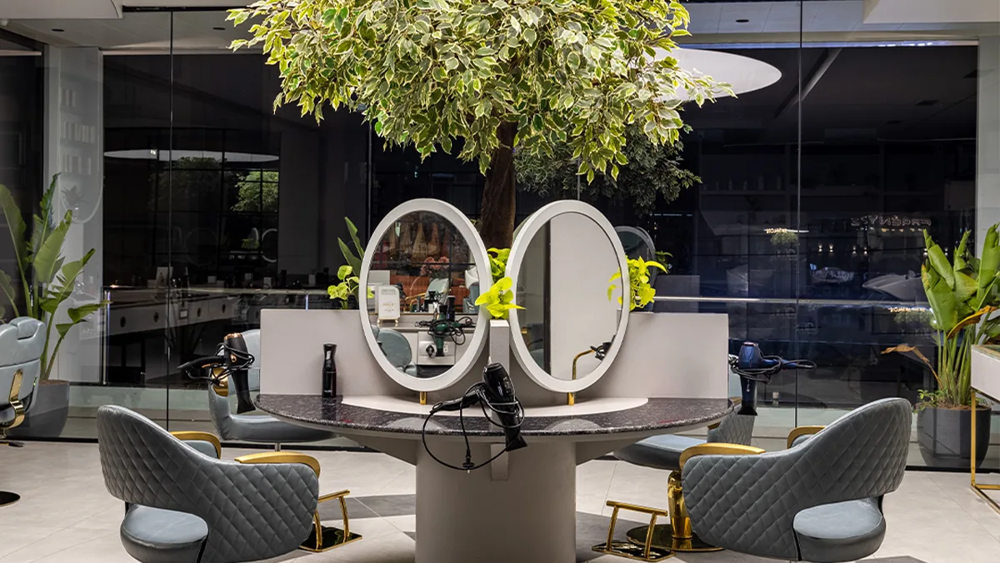

Choosing between gel nail extensions and acrylic nails depends on your preferred nail shape, desired appearance, lifestyle, and maintenance routine. Both techniques can add length, strength, and style to natural nails, but they differ in application methods, flexibility, appearance, and removal processes.
Gel nail extensions generally offer a flexible, glossy, natural-looking finish, while acrylic nails are known for their firm structure and durability. Understanding these differences can help you choose the right nail enhancement for everyday wear, special occasions, or creative nail designs.
Gel nail extensions are artificial nail enhancements created using specially formulated gel products. The gel is shaped over a nail form or applied using a suitable extension system and cured under a UV or LED lamp, depending on the product.
They are popular among people who prefer a smooth, glossy finish and a lightweight feel.
Key characteristics of gel nail extensions include:
Acrylic nails are artificial nail enhancements created by combining a liquid monomer with a polymer powder. This mixture forms a workable product that is shaped over the natural nail or an extension tip before hardening.
Acrylic nails are widely used for creating longer nail shapes and structured nail designs.
Key characteristics of acrylic nails include:
Although both techniques enhance natural nails, their application and finished appearance are different.
| Feature | Gel Nail Extensions | Acrylic Nails |
|---|---|---|
| Application | Gel product cured under UV or LED light | Liquid monomer mixed with polymer powder |
| Texture | Generally more flexible | Generally firmer |
| Appearance | Smooth and glossy | Can be glossy or matte |
| Weight | Often feels lighter | Can feel heavier depending on thickness |
| Structure | Flexible enhancement | Firm enhancement |
| Odour | Usually lower odour, depending on product | Often has a noticeable chemical odour |
| Nail shapes | Multiple customisable shapes | Multiple customisable shapes |
| Removal | Depends on gel system | Usually requires professional removal or filing |
Neither option is automatically better for everyone. Application quality, product formulation, nail condition, and aftercare all influence the final result.
Your preferred nail appearance and everyday activities can help determine which option is more suitable.
Choose Gel Nail Extensions If You Prefer a Natural Finish
Gel nail extensions may suit you if you:
Acrylic nails may be suitable if you:
Both gel and acrylic nail extensions can provide lasting results when applied and maintained correctly. However, their lifespan depends on product quality, application technique, natural nail growth, and everyday activities.
Acrylic nails are generally known for their firm structure, while gel extensions offer a more flexible feel. Neither technique is guaranteed to last longer in every situation.
Regular salon maintenance is important for both options because natural nails continue growing underneath the extensions.
You should also avoid picking, pulling, or forcefully removing artificial nails, as this can damage the natural nail plate.
The right nail shape can complement your fingers and personal style.
Some popular options include:
Proper nail care helps maintain the appearance of extensions and supports natural nail health.
Follow these practical tips:
Choosing the right nail extension technique involves considering more than the final design. Proper nail preparation, product selection, application, hygiene, and maintenance are important for achieving a polished result.
At Frenyz Salon in Vadodara, clients can explore professional beauty and nail services based on their preferred styles and requirements.
Whether you prefer the glossy appearance of gel nail extensions or the structured finish of acrylic nails, discuss your desired length, nail shape, lifestyle, and maintenance preferences during your consultation.
A professional nail consultation can help you select an enhancement that complements your natural nails and personal style.
Gel nail extensions and acrylic nails both offer ways to enhance natural nails with additional length, structure, and creative designs. Gel extensions are generally preferred for their flexible feel and smooth finish, while acrylic nails are popular for their firm structure and ability to create longer, dramatic shapes.
The right option depends on your preferred appearance, natural nail condition, lifestyle, and maintenance routine. Consulting a professional nail technician can help you choose a suitable technique and maintain your nail enhancements properly.
Neither option is universally better. Gel nail extensions are often preferred for their flexible feel and glossy appearance, while acrylic nails offer a firmer structure. The right choice depends on your desired nail length, lifestyle, and personal preferences.
Both techniques can contribute to natural nail damage if applied, maintained, or removed incorrectly. Excessive filing, forceful removal, and repeated picking can weaken the natural nail plate. Professional application and appropriate removal practices help reduce these risks.
Maintenance frequency depends on natural nail growth, extension condition, and the application system. Many clients require professional maintenance every two to three weeks, although the appropriate schedule can vary. Your nail technician can recommend a suitable appointment interval.